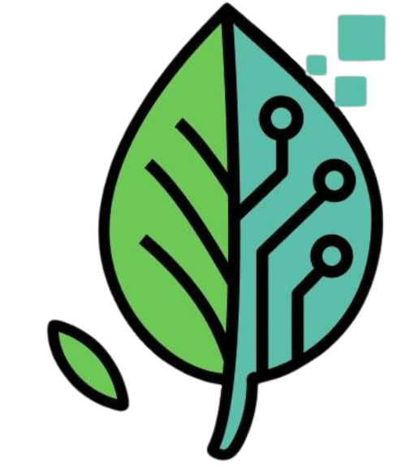

Nossa equipe é composta por 4(quatro) integrantes sendo eles:
Andrey Stellin Ferreira- Responsável pelo Artigo cientifico, Figma, Back-end.
Júlio Cesar dos Santos Lima- Responsável pelo Figma, Logo, Canva, Diagrama de caso e uso, Back-end.
Vinicius Ricardo de Deus Rodrigo- Responsável pelo Figma, Back-end.
Yuri Pignotti Koyama- Responsável pelo Site em html e css, diagrama de redes, Front-end.
Sobre a Gaiacore
Na Gaiacore, acreditamos que o futuro da inovação passa por um equilíbrio verdadeiro entre natureza e tecnologia. Somos uma empresa que nasceu com a missão de desenvolver soluções inteligentes que respeitam o meio ambiente, integram tecnologia de ponta e promovem um mundo mais sustentável.
Nosso nome une dois conceitos fundamentais:
Gaia, a representação da Terra viva, que inspira nossa conexão com o planeta;
Core, o núcleo, a essência tecnológica que impulsiona nossos projetos.
Logo e paleta de cores:

O logo da equipe uma folha de árvore parte biológica parte tecnologica, simbolizando a fusão entre a natureza e a busca pelo desenvolvimento. Optamos por cores mais suaves, como verde-claro, que evoca tranquilidade, confiança e cuidado — aspectos essenciais quando falamos de saúde. A identidade visual da nossa equipe foi pensada para refletir nossos valores: tecnologia, natureza e leveza.